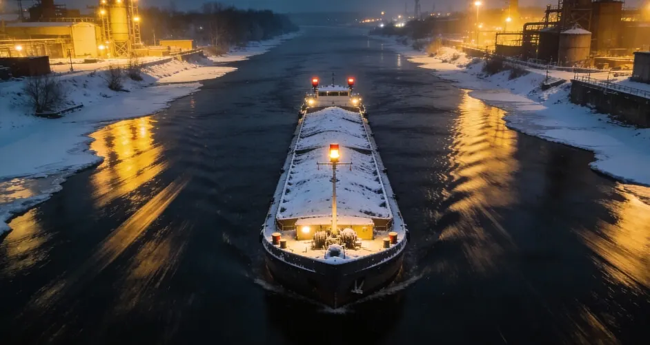
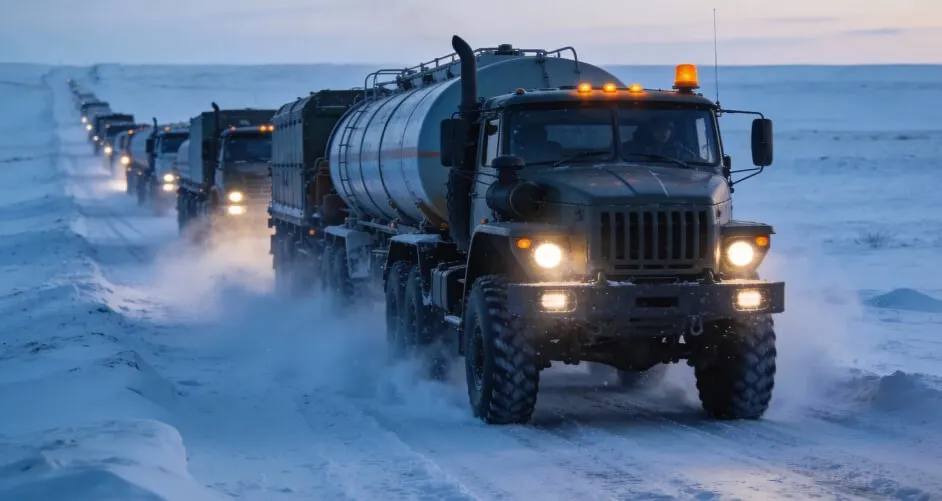

Логистика нерудных и грузов для нефтегазовых, горнодобывающих, металлургических и строительных предприятий
От карьера до объекта
Добываем песок и щебень на собственных месторождениях, храним и перегружаем грузы на базах в Коротчаево, Приобье и Лабытнанги, возим судами «река-море» и по зимним автодорогам.
- Карьер
- База
- Река или зимник
- Объект
- 3 базыКоротчаево, Приобье, Лабытнанги
- 16 барж-площадокгрузоподъёмностью до 3000 т
- ХМАО, ЯНАОи Красноярский край
Четыре звена одной цепочки
Груз ведёт одна компания: от отгрузки в карьере до разгрузки на площадке. Ваши грузы — под контролем на воде, на дороге и на складе.

-
Добыча и поставка нерудных материалов
Полный цикл от карьера до объекта. Разрабатываем собственные месторождения песка и щебня и берём на себя доставку — для строительства дорог, площадок, обустройства месторождений.
-
Склады открытого, холодного и тёплого хранения
Собственные производственно-логистические базы в Коротчаево, Приобье и Лабытнанги. Перевалка между видами транспорта и хранение в контролируемых условиях до отгрузки.
-
Перевозки водным транспортом
Суда смешанного плавания «река-море» соединяют внутренние промышленные районы со стройками на арктическом побережье. Решение для крупногабаритных и массовых грузов на большие расстояния.
-
Автоперевозки до месторождений, в том числе по зимникам
Доставка грузов к удалённым объектам нефтегазовой и горнодобывающей отраслей там, где нет постоянных дорог.
Маршрут груза
Выберите груз и сезон — схема покажет, как он доходит до объектов, куда УЛС уже поставляла такие грузы. Летом работает река, зимой — автодороги и зимники.
- река, суда «река-море»
- автодорога
- зимник
- база УЛС: склад и перевалка
Схема не в масштабе. Базы и пункты поставок — с сайта компании, связи между ними условны: конкретный маршрут подбирается под заявку. Место карьеров на сайте не указано.
Что уже доставили
ООО «УЛС» — логистический партнёр предприятий нефтегазовой, горнодобывающей, металлургической и строительной отраслей. География: ХМАО, ЯНАО, Красноярский край.
более11 тыс.штук дорожных плит ПДН
Харбейское и Тамбейское нефтегазоконденсатные месторождения, посёлок Тазовский
Показать на схемеболее900 тыс. тщебня
Строительные работы в Березово, Ханты-Мансийске и Новом Уренгое
Показать на схемеболее700 тыс. тпеска
Дорожное строительство и производство ЖБИ в Сургуте, Салехарде, Березово; ремонт основной нитки нефтепровода «Урьевские — Южный Балык»
Показать на схемеболее30 тыс. тугля
Для районов и населённых пунктов ЯНАО и ХМАО
Показать на схеме
Команда с каждым годом пополняется молодыми специалистами.
Флот и техника
Своё оснащение для воды, берега и дороги.
Баржи-площадки
грузоподъёмность, т · единиц
Буксиры
мощность · единиц
Плавкраны
грузоподъёмность 5–16 т
4 единицы
Автопогрузчики и автокраны
грузоподъёмность от 25 т
6 единиц
Обсудим ваш груз
Расскажите, что и куда нужно доставить, — предложим маршрут, сезон и вид транспорта.
+7 (343) 304-28-44 info@ulogist.ru Екатеринбург, ул. Ткачей, д. 23, офис 612